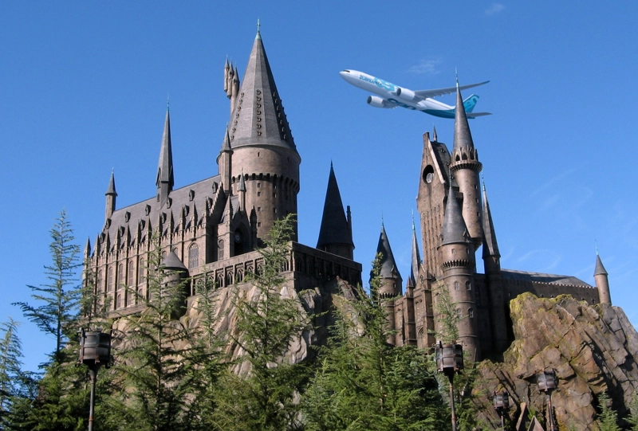

Ekonomi

Hogwarts Express expanderar till flygbranschen
Under helgen tog Dumbledore, trollkarlsskolan Hogwarts rektor, den första av många resor i en av de fem Airbus A330neo som Hogwarts Express köpt in för miljardbelopp. Den nya investeringen i flygresor påstås vara för att låta fler elever nå skolan, men en högt uppsatt källa som Löken pratat med säger att inköpet istället är en sista desperat chansning att rädda det skuldbelagda bolaget.
Historiskt sett har Hogwarts Express alltid gått med förlust och företaget har behövt förlita sig på statligt stöd för att inte gå under. Men med en tuff ekonomi tillsammans med faktumet att en mindre andel unga vill bli magiskt undervisade har satt press på företaget. Situationen hjälps inte av att många elever väljer att ta sig till skolan på andra sätt, såsom exempelvis med drake, istället för det berömda tåget. Allt det här tillsammans har satt det brittiska bolaget i en svår situation och har liknats vid en perfekt storm.
Enligt Dumbledore ska den nya satsningen ge nytt liv till det decenniumgamla företaget. Flygplanen finansieras med en blandning av ett stort lån från Gringoths bank och donationer från privata aktörer. Tillsammans med flygplanen ska tre flygbanor och ett flygkontrollcenter konstrueras framför skolans slott, och rykten säger att Hogwarts Express har lyckats få tag på eftertraktade avtal att landa både på Heathrow Airport och Liverpool John Lennon Airport. En mängd trollkarlar och mugglare har uttryckt stark kritik på X (tidigare Twitter) över hur nära flygbanan kommer vara skolan och att det riskerar att förstöra den ikoniska vyn. Skolans ledning har försökt lugna allmänheten, men har inte kommit på konkreta lösningar på problemen. Två av flygbanorna är fortfarande inte klara och förväntas vara det till årsskiftet. Dumbledore sa i en kommentar till Löken att innovation ibland måste sättas före historia.
Upplaga 33
13/4/2026